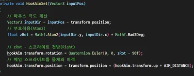
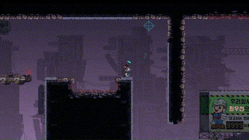
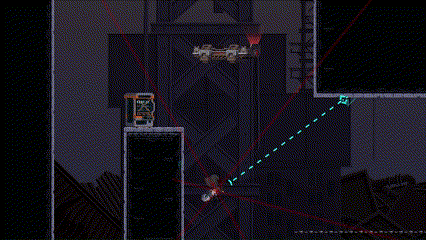
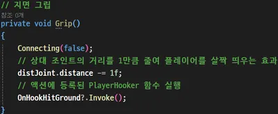
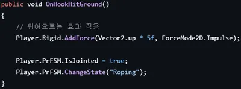
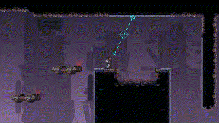
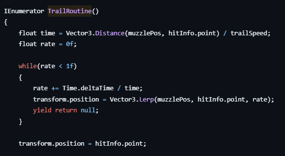

| 목적 | 개인 모작 프로젝트(학습용) |
|---|---|
| 장르 | 로프액션 플랫포머 |
| 플랫폼 | PC |
| 개발 환경 | Unity2D, C# |
| 개발 기간 | 24.02.22 ~ 24.03.07 (15일) |
| 개발 인원 | 개인 |
| 담당 업무 | 캐릭터 액션(로프 액션, 스킬) 구현 · 시네마틱 연출 · 몬스터 AI(FSM) 구현 |
플레이어 좌표에서 마우스 좌표까지의 방향 벡터를 구하고, 이 방향으로 일정 거리를 떨어뜨린 위치에 Muzzle 포인트를 배치했습니다. 마우스 위치가 바뀔 때마다 방향 벡터도 갱신되므로, Muzzle 포인트는 플레이어를 중심으로 원을 그리며 따라 움직입니다.
조준은 캐릭터를 중심으로 360도 전 방향을 커버해야 하므로, 방향 각도도 -180°~180° 전 범위로 표현할 수 있어야 했습니다. 따라서 비율 기반이 아닌 x, y를 각각 받아 전체 범위의 각도를 반환하는 Atan2(y, x) 함수로 방향 각도를 계산해 Muzzle 위치에 반영했습니다.

(Atan2를 사용해 방향 각도를 계산하는 코드)
Muzzle에서 마우스 월드 좌표 방향으로 레이캐스팅을 수행하고, 부딪히는 지점까지 LineRenderer로 선을 그려 플레이어가 조준 경로를 직관적으로 확인할 수 있는 가이드 라인을 구현했습니다.

(벽에 부딪혀 표시되는 조준 가이드 라인)

(몬스터에 부딪혀 표시되는 조준 가이드 라인)
앞서 적용된 에임 방향으로 고리(Hook) 오브젝트를 발사하여, Ground 오브젝트와 충돌하면 DistanceJoint2D를 활성화하고 ConnectedBody를 플레이어의 Rigidbody2D로 할당했습니다.
DistanceJoint2D를 사용한 이유는 이 조인트가 '거리를 유지하려는 특성'을 갖고 있기 때문입니다. 이 특성을 이용해 연결된 순간의 실제 거리보다 짧은 값을 Distance로 할당해 플레이어가 고리 쪽으로 당겨지도록 했고, 동시에 플레이어의 Rigidbody2D에 ForceMode2D.Impulse로 위로 튀어 오르는 듯한 순간적인 물리력을 가했습니다. 위로 튀어 오른 이후에도 중력이 계속 작용해 DistanceJoint2D와 결합되며, 진자운동을 하는 듯한 궤적을 그리는 로프 액션을 구현했습니다.

(Hook 발사를 처리하는 코드)

(로프 액션 수행)

(로프 액션 결과)
테스트 중 특정 상황에서 발사한 Hook이 TilemapCollider를 그대로 통과해버리는 문제가 간헐적으로 발생했습니다. 발생 조건이 일정하지 않았던 것을 보고, 빠르게 이동하는 오브젝트가 물리 프레임 사이에서 얇은 콜라이더를 건너뛰는 터널링 문제로 판단했습니다.
Unity가 제공하는 CCD(Continuous Collision Detection)를 검토했지만, 조준 가이드 라인 기능에서 이미 매 프레임 에임 방향으로 레이캐스팅해 가장 먼저 충돌하는 벽 좌표를 구하고 있었습니다. Hook의 이동 속도를 고려했을 때 발사 시점과 실제 도달 시점 사이에서 오차가 생길 가능성은 낮다고 판단했고, CCD는 이 문제에 비해 비용이 많이 드는 과한 해결책이라고 보고 보간(Interpolation)을 통한 Transform 이동 방식을 사용하기로 했습니다.
1번에서 언급했던 것처럼 Hook 발사 전에 미리 도착 지점까지 레이캐스팅을 하고 있었기에, 도착 지점과 도착 지점의 법선까지 쉽게 구할 수 있었고, 문제가 발생할 수 있는 물리 이동보다는 보간을 통한 Transform 이동으로 변경했습니다.

(보간 기반 Transform 이동 구현 코드)